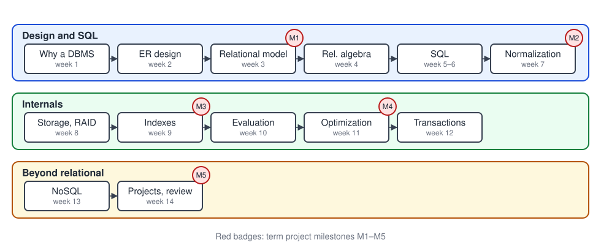
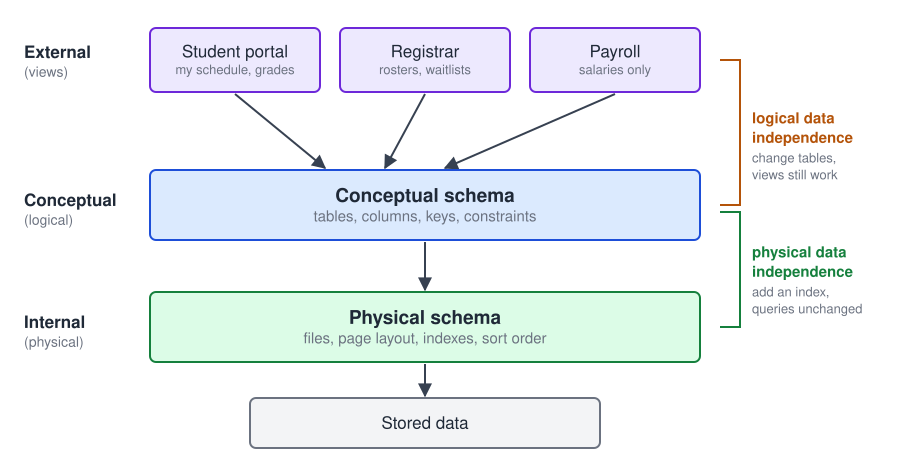
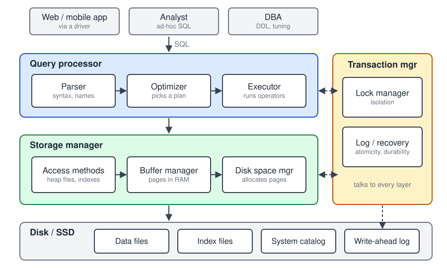

<!DOCTYPE html>
<html lang="en">
<head>
    <meta charset="utf-8" />
    <meta name="viewport" content="width=device-width, initial-scale=1.0, maximum-scale=1.0, user-scalable=no" />

    <title></title>
    <link rel="stylesheet" href="dist/reset.css">
    <link rel="stylesheet" href="dist/reveal.css" />
    <link rel="stylesheet" href="css/slides-extended.css" />
    <link rel="stylesheet" href="assets/css/ucf-knights.css" id="theme" />
    <link rel="stylesheet" href="plugin/highlight/zenburn.css" />
    <link rel="stylesheet" href="plugin/customcontrols/style.css">


    <script defer src="dist/fontawesome/all.min.js"></script>

    <script type="text/javascript">
        function pageInIframe() {
            return (window.location !== window.parent.location);
        }

        let forgetPop = true;
        function onPopState(event) {
            if(forgetPop){
                forgetPop = false;
            } else if( pageInIframe()) {
                parent.postMessage(event.target.location.href, "app://obsidian.md");
            }
        }
        window.onpopstate = onPopState;
        window.onmessage = event => {
            if(event.data == "reload"){
                window.document.location.reload();
            }
            forgetPop = true;
        }

        function fitElements() {
            const itemsToFit = document.getElementsByClassName('fitText');
            for (const item in itemsToFit) {
                if (Object.hasOwnProperty.call(itemsToFit, item)) {
                    const element = itemsToFit[item];
                    fitElement(element, 1, 1000);
                    element.classList.remove('fitText');
                }
            }
        }

        function fitElement(element, start, end) {

            let size = (end + start) / 2;
            element.style.fontSize = `${size}px`;

            if (Math.abs(start - end) < 1) {
                while (element.scrollHeight > element.offsetHeight) {
                    size--;
                    element.style.fontSize = `${size}px`;
                }
                return;
            }

            if (element.scrollHeight > element.offsetHeight) {
                fitElement(element, start, size);
            } else {
                fitElement(element, size, end);
            }
        }

        document.onreadystatechange = () => {
            fitElements();
            if (document.readyState === 'complete') {
                if (pageInIframe() && window.location.href.indexOf("?export") != -1){
                    parent.postMessage(event.target.location.href, "app://obsidian.md");
                }
                if (window.location.href.indexOf("print-pdf") != -1){
                    let stateCheck = setInterval(() => {
                        clearInterval(stateCheck);
                        window.print();
                    }, 250);
                }
            }
        };
    </script>
</head>

<body>
    <div class="reveal">
        <div class="slides"><section  data-markdown><script type="text/template"><!-- .slide: class="title-slide drop" template="" -->
<div class="" style="position: absolute; left: 0px; top: 0px; height: 1080px; width: 1920px; min-height: 1080px; display: flex; flex-direction: column; align-items: center; justify-content: center" absolute="true">

### COP 4710 Database Systems · Week 1

# Why Database Systems?

Dr. John Aedo<br>
University of Central Florida, Department of Computer Science

**Readings:** Adrienne Watt and Nelson Eng, *Database Design – 2nd Edition* (BCcampus, CC BY 4.0)

- Ch. 1 Before the Advent of Database Systems
- Ch. 2 Fundamental Concepts
- Ch. 3 Characteristics and Benefits of a Database
- Ch. 4 Types of Data Models
- Ch. 6 Classification of Database Management Systems
</div></script></section><section  data-markdown><script type="text/template"><!-- .slide: class="drop" template="" -->
<div class="" style="position: absolute; left: 0px; top: 0px; height: 1080px; width: 1920px; min-height: 1080px; display: flex; flex-direction: column; align-items: center; justify-content: center" absolute="true">

## Today

1. How the course works
2. Life before databases: file-based systems
3. What a DBMS adds
4. Data models, schemas, and instances
5. Levels of abstraction and data independence
6. Inside a DBMS
7. First contact with PostgreSQL
</div></script></section><section  data-markdown><script type="text/template"><!-- .slide: class="drop" template="" -->
<div class="" style="position: absolute; left: 0px; top: 0px; height: 1080px; width: 1920px; min-height: 1080px; display: flex; flex-direction: column; align-items: center; justify-content: center" absolute="true">

## How the course works

| Component | Weight |
| --- | --- |
| Homework (5) | 20% |
| Labs (6 graded) | 10% |
| Term project (5 milestones + demo) | 30% |
| Midterm (week 7) | 20% |
| Final (cumulative) | 20% |

- Readings are free: Watt & Eng (open textbook) and the UC Berkeley CS 186 notes
- One running example all term: a **university database**
</div></script></section><section  data-markdown><script type="text/template"><!-- .slide: class="drop" template="" -->
<div class="" style="position: absolute; left: 0px; top: 0px; height: 1080px; width: 1920px; min-height: 1080px; display: flex; flex-direction: column; align-items: center; justify-content: center" absolute="true">

## The course at a glance




<aside class="notes"><p>The three lanes match the three arcs of the course. Point out where each project milestone lands.</p>
</div></aside></script></section><section  data-markdown><script type="text/template"><!-- .slide: class="divider drop" template="" -->
<div class="" style="position: absolute; left: 0px; top: 0px; height: 1080px; width: 1920px; min-height: 1080px; display: flex; flex-direction: column; align-items: center; justify-content: center" absolute="true">

## Life before databases
</div></script></section><section  data-markdown><script type="text/template"><!-- .slide: class="drop" template="" -->
<div class="" style="position: absolute; left: 0px; top: 0px; height: 1080px; width: 1920px; min-height: 1080px; display: flex; flex-direction: column; align-items: center; justify-content: center" absolute="true">

## A file-based registrar

Each office wrote its own program and kept its own files:

```text
registrar/students.csv    1,Ana Lopez,CS,3,3.60,407-555-0101
housing/residents.csv     1,Ana Lopez,Lake Claire 214,407-555-0101
financial/accounts.csv    1,Lopez Ana,...,407-555-0101
```

- Ana changes her phone number. Which files get updated?
- Housing spells her name differently. Which one is right?
- Registrar adds a `minor` column. Every program that parses the file breaks.
</div></script></section><section  data-markdown><script type="text/template"><!-- .slide: class="drop" template="" -->
<div class="" style="position: absolute; left: 0px; top: 0px; height: 1080px; width: 1920px; min-height: 1080px; display: flex; flex-direction: column; align-items: center; justify-content: center" absolute="true">

## Problems with file-based systems

- **Redundancy:** the same fact stored in many places
- **Inconsistency:** copies drift apart after updates
- **Program–data dependence:** file layout is baked into code
- **Hard ad-hoc questions:** each new question needs a new program
- **Concurrency:** two clerks update the same file at once
- **Security:** all-or-nothing access to a file
- **Recovery:** a crash halfway through a batch leaves a mess

<aside class="notes"><p>Watt Ch. 1 lists these. Ask students which of these they have hit in their own projects.</p>
</div></aside></script></section><section  data-markdown><script type="text/template"><!-- .slide: class="drop" template="" -->
<div class="" style="position: absolute; left: 0px; top: 0px; height: 1080px; width: 1920px; min-height: 1080px; display: flex; flex-direction: column; align-items: center; justify-content: center" absolute="true">

## Definitions

- **Database:** a shared collection of logically related data, designed to meet an organization's information needs
- **Database management system (DBMS):** software that defines, creates, maintains, and controls access to databases
- **Database system:** the DBMS, the database, and the applications that use them

> A DBMS lets many users store and query large, shared, persistent data **efficiently, safely, and concurrently**.
</div></script></section><section  data-markdown><script type="text/template"><!-- .slide: class="drop" template="" -->
<div class="" style="position: absolute; left: 0px; top: 0px; height: 1080px; width: 1920px; min-height: 1080px; display: flex; flex-direction: column; align-items: center; justify-content: center" absolute="true">

## What a DBMS gives you

| File-system problem | DBMS answer |
| --- | --- |
| Redundancy, inconsistency | One integrated schema, constraints |
| Program–data dependence | Data independence through a schema |
| New question, new program | Declarative queries (SQL) |
| Concurrent updates | Transactions and locking |
| Crashes mid-update | Logging and recovery |
| Coarse security | Users, roles, views, privileges |
</div></script></section><section  data-markdown><script type="text/template"><!-- .slide: class="drop" template="" -->
<div class="" style="position: absolute; left: 0px; top: 0px; height: 1080px; width: 1920px; min-height: 1080px; display: flex; flex-direction: column; align-items: center; justify-content: center" absolute="true">

## Characteristics of the database approach

- **Self-describing:** the catalog stores the schema as data
- **Insulation:** programs see the schema, not the files
- **Multiple views:** each user sees what they need
- **Shared, concurrent access** with transactions

The catalog is queryable like any other data:

```sql
SELECT table_name
FROM information_schema.tables
WHERE table_schema = 'public';
```
</div></script></section><section  data-markdown><script type="text/template"><!-- .slide: class="divider drop" template="" -->
<div class="" style="position: absolute; left: 0px; top: 0px; height: 1080px; width: 1920px; min-height: 1080px; display: flex; flex-direction: column; align-items: center; justify-content: center" absolute="true">

## Data models
</div></script></section><section  data-markdown><script type="text/template"><!-- .slide: class="drop" template="" -->
<div class="" style="position: absolute; left: 0px; top: 0px; height: 1080px; width: 1920px; min-height: 1080px; display: flex; flex-direction: column; align-items: center; justify-content: center" absolute="true">

## What is a data model?

A data model is a collection of concepts for describing data:

1. **Structures:** how data is organized (tables, trees, graphs, documents)
2. **Operations:** how data is queried and changed
3. **Constraints:** rules every valid database must obey

The **relational model** is the one this course builds on.
</div></script></section><section  data-markdown><script type="text/template"><!-- .slide: class="drop" template="" -->
<div class="" style="position: absolute; left: 0px; top: 0px; height: 1080px; width: 1920px; min-height: 1080px; display: flex; flex-direction: column; align-items: center; justify-content: center" absolute="true">

## A brief history of data models

| Model | Era | Idea | Example systems |
| --- | --- | --- | --- |
| Hierarchical | 1960s | Records in a tree | IBM IMS |
| Network | late 1960s–70s | Records linked by pointers | CODASYL, IDMS |
| Relational | 1970 → today | Tables and declarative queries | PostgreSQL, Oracle, SQL Server |
| Entity–relationship | 1976 | Conceptual design diagrams | Design tool, not a DBMS |
| Object / document | 1990s → today | Nested objects, JSON | MongoDB (week 13) |

<aside class="notes"><p>Codd published the relational model in 1970; Chen published the ER model in 1976.</p>
</div></aside></script></section><section  data-markdown><script type="text/template"><!-- .slide: class="drop" template="" -->
<div class="" style="position: absolute; left: 0px; top: 0px; height: 1080px; width: 1920px; min-height: 1080px; display: flex; flex-direction: column; align-items: center; justify-content: center" absolute="true">

## The relational model in one slide

Data lives in **relations** (tables). Each row is a fact; each column has a type.

| student_id | name | major | year | gpa |
| --- | --- | --- | --- | --- |
| 1 | Ana Lopez | CS | 3 | 3.60 |
| 3 | Chen Wei | MATH | 2 | 3.90 |
| 5 | Eli Novak | PHYS | 3 | 3.30 |

- Rows are found by **value**, not by following pointers
- Queries say **what** to retrieve; the DBMS decides **how**
</div></script></section><section  data-markdown><script type="text/template"><!-- .slide: class="drop" template="" -->
<div class="" style="position: absolute; left: 0px; top: 0px; height: 1080px; width: 1920px; min-height: 1080px; display: flex; flex-direction: column; align-items: center; justify-content: center" absolute="true">

## Schema versus instance

- **Schema:** the structure, which changes rarely

```sql
student(student_id INTEGER, name VARCHAR(60), major CHAR(4),
        year SMALLINT, gpa NUMERIC(3,2))
```

- **Instance (state):** the rows stored right now, which change constantly
- A **valid** instance satisfies every constraint in the schema

Analogy: the schema is a variable's type; the instance is its current value.
</div></script></section><section  data-markdown><script type="text/template"><!-- .slide: class="drop" template="" -->
<div class="" style="position: absolute; left: 0px; top: 0px; height: 1080px; width: 1920px; min-height: 1080px; display: flex; flex-direction: column; align-items: center; justify-content: center" absolute="true">

## Levels of abstraction


</div></script></section><section  data-markdown><script type="text/template"><!-- .slide: class="drop" template="" -->
<div class="" style="position: absolute; left: 0px; top: 0px; height: 1080px; width: 1920px; min-height: 1080px; display: flex; flex-direction: column; align-items: center; justify-content: center" absolute="true">

## Data independence

**Logical data independence:** change the conceptual schema without breaking external views

- Split `student` into two tables; recreate the old shape as a view

**Physical data independence:** change storage without changing queries

- Add an index on `student(major)`; every query still works, some get faster

> Data independence is the main reason the relational model won.
</div></script></section><section  data-markdown><script type="text/template"><!-- .slide: class="divider drop" template="" -->
<div class="" style="position: absolute; left: 0px; top: 0px; height: 1080px; width: 1920px; min-height: 1080px; display: flex; flex-direction: column; align-items: center; justify-content: center" absolute="true">

## Inside a DBMS
</div></script></section><section  data-markdown><script type="text/template"><!-- .slide: class="drop" template="" -->
<div class="" style="position: absolute; left: 0px; top: 0px; height: 1080px; width: 1920px; min-height: 1080px; display: flex; flex-direction: column; align-items: center; justify-content: center" absolute="true">

## DBMS architecture


</div></script></section><section  data-markdown><script type="text/template"><!-- .slide: class="drop" template="" -->
<div class="" style="position: absolute; left: 0px; top: 0px; height: 1080px; width: 1920px; min-height: 1080px; display: flex; flex-direction: column; align-items: center; justify-content: center" absolute="true">

## The life of a query

```sql
SELECT name FROM student WHERE major = 'CS';
```

1. **Parser:** checks syntax and that `student` and `major` exist (catalog)
2. **Optimizer:** chooses a plan: full scan, or an index on `major` if one exists
3. **Executor:** runs the plan, requesting pages from the storage manager
4. **Buffer manager:** serves pages from memory, or reads them from disk
5. Results stream back to the client

We open each of these boxes in weeks 8–12.
</div></script></section><section  data-markdown><script type="text/template"><!-- .slide: class="drop" template="" -->
<div class="" style="position: absolute; left: 0px; top: 0px; height: 1080px; width: 1920px; min-height: 1080px; display: flex; flex-direction: column; align-items: center; justify-content: center" absolute="true">

## The transaction manager

A **transaction** is a unit of work that is all-or-nothing:

```sql
BEGIN;
UPDATE section SET capacity = capacity - 1 WHERE section_id = 1003;
INSERT INTO enrollment VALUES (4, 1003, NULL);
COMMIT;
```

- **Lock manager:** keeps concurrent transactions from interfering
- **Log manager:** records changes so a crash can be undone or redone

Full treatment in week 12.
</div></script></section><section  data-markdown><script type="text/template"><!-- .slide: class="drop" template="" -->
<div class="" style="position: absolute; left: 0px; top: 0px; height: 1080px; width: 1920px; min-height: 1080px; display: flex; flex-direction: column; align-items: center; justify-content: center" absolute="true">

## Classifying DBMSs (Watt Ch. 6)

- **By data model:** relational, document, key-value, graph, ...
- **By number of users:** single-user (SQLite in an app) or multi-user
- **By distribution:** centralized, or distributed (homogeneous or heterogeneous)
- **By workload:**
    - OLTP: many short reads and writes (registration)
    - OLAP: few long analytical scans (enrollment trends)
</div></script></section><section  data-markdown><script type="text/template"><!-- .slide: class="drop" template="" -->
<div class="" style="position: absolute; left: 0px; top: 0px; height: 1080px; width: 1920px; min-height: 1080px; display: flex; flex-direction: column; align-items: center; justify-content: center" absolute="true">

## People around a database

- **End users:** use applications, rarely write SQL
- **Application programmers:** embed queries in code
- **Database designers:** turn requirements into schemas (weeks 2–7)
- **Database administrators:** security, backups, tuning (weeks 8–12)
- **DBMS implementers:** build the engine itself

This course gives you the designer's and programmer's skills, plus enough of the implementer's view to tune a real system.
</div></script></section><section  data-markdown><script type="text/template"><!-- .slide: class="drop" template="" -->
<div class="" style="position: absolute; left: 0px; top: 0px; height: 1080px; width: 1920px; min-height: 1080px; display: flex; flex-direction: column; align-items: center; justify-content: center" absolute="true">

## Why PostgreSQL in this course

- Open source and free, with a long history (Berkeley POSTGRES, 1986)
- Close to the SQL standard, with strong constraint support
- `EXPLAIN ANALYZE` exposes real query plans (weeks 9–11)
- Real transactions and isolation levels (week 12)

Same SQL, different engine: most of what you learn transfers to MySQL, SQL Server, Oracle, and SQLite.
</div></script></section><section  data-markdown><script type="text/template"><!-- .slide: class="drop" template="" -->
<div class="" style="position: absolute; left: 0px; top: 0px; height: 1080px; width: 1920px; min-height: 1080px; display: flex; flex-direction: column; align-items: center; justify-content: center" absolute="true">

## First contact

```sql
SELECT name, gpa
FROM student
WHERE major = 'CS'
ORDER BY gpa DESC;
```

| name | gpa |
| --- | --- |
| Fatima Khan | 3.80 |
| Ana Lopez | 3.60 |
| Ben Okafor | 3.10 |
| Dana Smith | 2.70 |
</div></script></section><section  data-markdown><script type="text/template"><!-- .slide: class="drop" template="" -->
<div class="" style="position: absolute; left: 0px; top: 0px; height: 1080px; width: 1920px; min-height: 1080px; display: flex; flex-direction: column; align-items: center; justify-content: center" absolute="true">

## Lab 1: set up PostgreSQL

```bash
# start the course containers (PostgreSQL + MongoDB)
docker compose up -d

# create and load the sample database
createdb cop4710
psql -d cop4710 -f university.sql

# explore
psql -d cop4710
```

Inside `psql`:

| Command | What it does |
| --- | --- |
| `\dt` | list tables |
| `\d student` | describe a table |
| `SELECT * FROM course;` | run a query (end with `;`) |
| `\q` | quit |

Deliverable: screenshots of `\dt` and three queries of your own.
</div></script></section><section  data-markdown><script type="text/template"><!-- .slide: class="drop" template="" -->
<div class="" style="position: absolute; left: 0px; top: 0px; height: 1080px; width: 1920px; min-height: 1080px; display: flex; flex-direction: column; align-items: center; justify-content: center" absolute="true">

## Check your understanding

1. Give two problems a file-based system has that a DBMS solves, and name the DBMS component that solves each.
2. Adding an index is an example of which kind of data independence?
3. Is "every student has a unique id" part of the schema or the instance?
4. Registration and an end-of-term enrollment report: which is OLTP and which is OLAP?
</div></script></section><section  data-markdown><script type="text/template"><!-- .slide: class="drop" template="" -->
<div class="" style="position: absolute; left: 0px; top: 0px; height: 1080px; width: 1920px; min-height: 1080px; display: flex; flex-direction: column; align-items: center; justify-content: center" absolute="true">

## Before next class

- Read Watt Ch. 5, 8, 10 (data modeling and ER)
- Finish Lab 1
- Form project teams of 3–4 by the end of week 2
- Think of a domain your team knows well: you will model it next week
</div></script></section></div>
    </div>

    <script src="dist/reveal.js"></script>
    <script src="plugin/notes/notes.js"></script>
    <script src="plugin/markdown/markdown.js"></script>
    <script src="plugin/obsidian-markdown.js"></script>
    <script src="plugin/highlight/highlight.js"></script>

    <script src="plugin/zoom/zoom.js"></script>
    <script src="plugin/math/math.js"></script>
    <script src="plugin/mermaid/mermaid.js"></script>
    <script src="plugin/chart/chart.umd.js"></script>
    <script src="plugin/chart/plugin.js"></script>
    <script src="plugin/customcontrols/plugin.js"></script>


    <script>
        function extend() {
            const target = {};
            for (let i = 0; i < arguments.length; i++) {
                const source = arguments[i];
                for (const key in source) {
                    if (source.hasOwnProperty(key)) {
                        target[key] = source[key];
                    }
                }
            }
            return target;
        }

        function isLight(color) {
            // normalize to rgb(a)
            const optionEl = document.createElement("option");
            optionEl.style.color = color;
            const normalizedColor = optionEl.style.color;

            const match = normalizedColor.match(/(\d+), (\d+), (\d+)/);
            if (!match) return false;
            const [, c_r, c_g, c_b] = match;

            const brightness = ((c_r * 299) + (c_g * 587) + (c_b * 114)) / 1000;
            return brightness > 155;
        }

        const bgColor = getComputedStyle(document.documentElement).getPropertyValue('--r-background-color').trim();

        if (isLight(bgColor)) {
            document.body.classList.add('has-light-background');
        } else {
            document.body.classList.add('has-dark-background');
        }

        // default options to init reveal.js
        const defaultOptions = {
            controls: true,
            progress: true,
            history: true,
            center: true,
            transition: 'default', // none/fade/slide/convex/concave/zoom
            plugins: [
                ObsidianMarkdown,
                RevealHighlight,
                RevealZoom,
                RevealNotes,
                RevealMath.KaTeX,
                RevealMermaid,
                RevealChart,
                RevealCustomControls,
            ],
            allottedTime: "120",

            katex: {
                local: 'plugin/math/katex',
                extensions: ["mhchem"],
            },
            markdown: {
                gfm: true,
            },
            mermaid: {
                theme: isLight(bgColor) ? 'default' : 'dark',
            },
            customcontrols: {
                controls: [
                ]
            },
        };

        if ( pageInIframe() ) {
            defaultOptions.scrollActivationWidth = 5;
        }

        // options from URL query string
        const queryOptions = Reveal().getQueryHash() || {};

        const options = extend(defaultOptions, {"controls":true,"progress":true,"slideNumber":true,"center":true,"transition":"slide","transitionSpeed":"default","width":"1920","height":"1080","margin":0.04}, queryOptions);
    </script>

    <script>
      /**
       * KaTeX Equation Numbering Note
       *
       * KaTeX maintains a global equation counter for \begin{equation} environments.
       * When navigating between slides, reveal.js math plugin may re-render math, causing
       * equation numbers to change randomly.
       *
       * Note: Regular $$ blocks don't have equation numbers - only \begin{equation} does.
       *
       * If you experience issues with equation numbers changing:
       * Use manual \tag{} commands: \begin{equation}\tag{1} ... \end{equation}
       */

      Reveal.initialize(options);
    </script>
    <!-- created with Slides Extended reveal.html template -->
</body>
</html>
